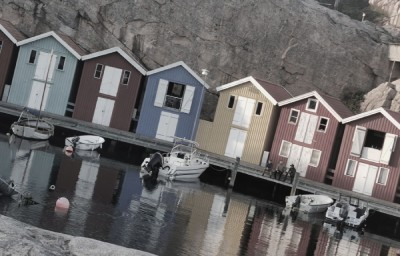
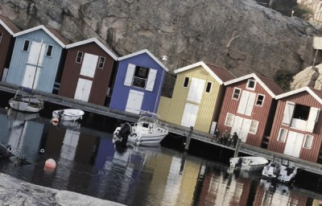

Bildredigering
Före och efter
Uppgiften bestod i att redigera minst tre bilder. Bilderna hade alla (minst) ett problem som skulle rättas till. De skulle också redigeras så att de blev enhetliga samt matchade sidan.
Jag valde att ha lite dovare och lugnare färger i mina bilder. Vanligtvis gillar jag att redigera mina foton (som ofta är i fjäll- eller träningsmiljö) så att det blir skarpa kontraster och bilderna ger ett mäktigt intryck.
På den här sidan ville jag prova motsatsen till det - jag försökte återskapa ett lugn i bilderna.
Färgkorrigering


Här har jag framförallt vridit upp mättnaden och kontrasten i fotot. Jag har även justerat färgbalansen något, samt dragit upp ljusstyrkan marginellt.
Jag har jobbat i olika masker och lager för att allt ska kunna göras ogjort om det hade behövts.
Borttagning av objekt


Här har fingret tagits bort i olika steg. Först använde jag lappverktyget (Patch Tool) för att framförallt få bort den del som var över himlen. Efter det använde jag klonverktyget för att få till detaljerna i byggnden. Jag fick inte till det genom att dra verktyget fram och tillbaka, utan fick bäst resultat av att ta små bitar åt gången och klona dem till motsvarande ställe längre och längre ut mot vänsterkanten.
Färgerna i denna bild var väldigt mastiga, så efter att fingret var borttaget fick jag jobba med att tona ner färgerna så att det skulle passa bättre in med de andra bilderna. Jag tog ner mättnaden marginellt, drog ner det röda lite, drog ner kontrasten och ljushet rejält och avslutade med att justera högdagrar där skuggorna blev betydligt ljusare.
Alla färgjusteringar gjordes i masker, så att de lätt skulle kunna tas bort igen vid behov.
Kattögat


Först tänkte jag färglägga ögat, men jag ville prova att använda lappverktygets "target-funktion" istället. Jag flyttade det vänstra ögat så att det hamnade över det vänstra. Sedan justerade jag ögats vinkel så att det passade bättre. Jag avslutade med att jämna ut övergångarna med klonverktyget.
Kontrast och mättnad drogs ner för att matcha resterande bilder.
Färgläggning


Detta var den mest tidskrävande redigeringen för mig. Jag beskar bilden för att få lite mindre yta att färglägga, samt valde att lämna vissa områden som var "vita nog" eller "svarta nog" för att spara tid. För själva färgläggandet arbetade jag med masker, en färg i taget. Jag valde "color fill", fyllde rutan med svart och använde penselverktyget för att göra det jag ville färglägga med vit färg. Jag började stort och zoomade in ordentligt för att göra detaljerna med en mindre borste.
Jag avslutade med att sänka kontrasten rejält för att den ska matcha de andra bilderna.